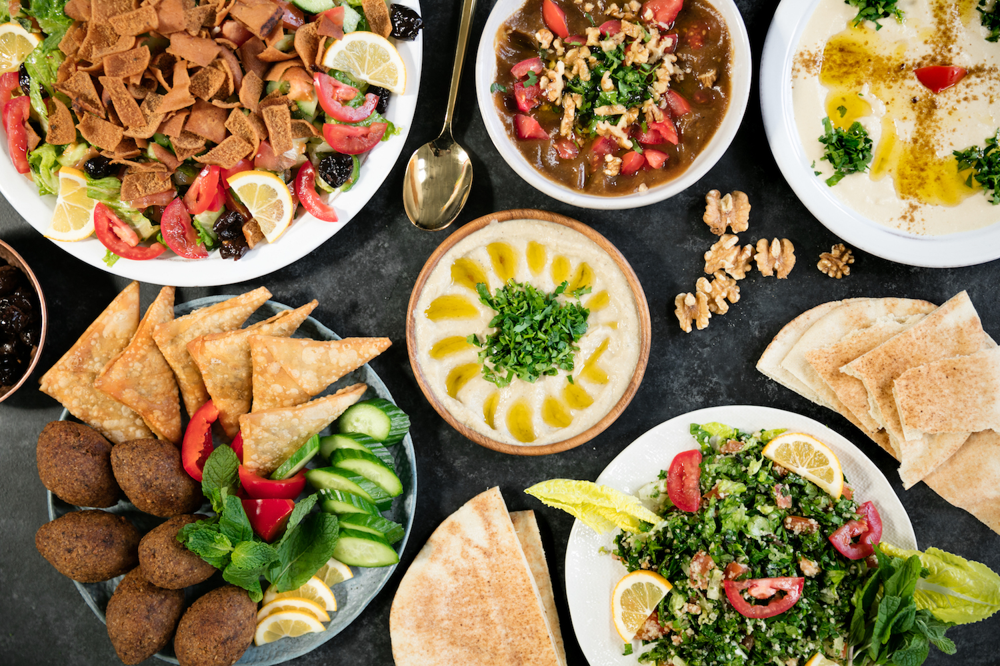
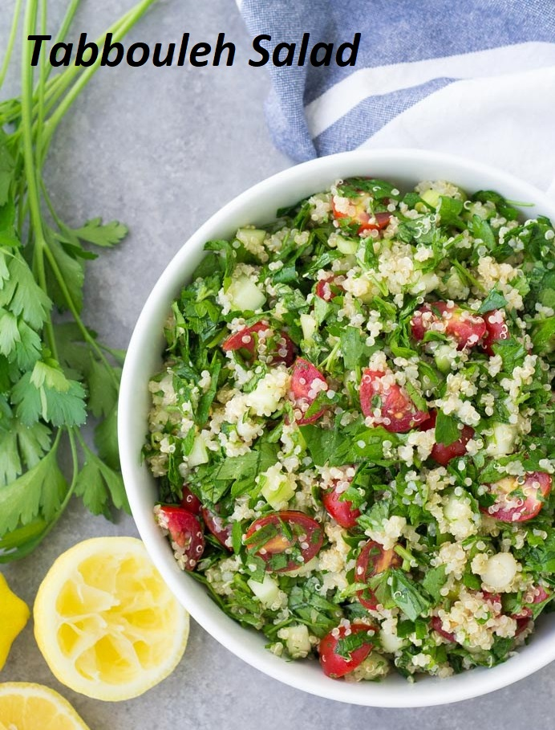
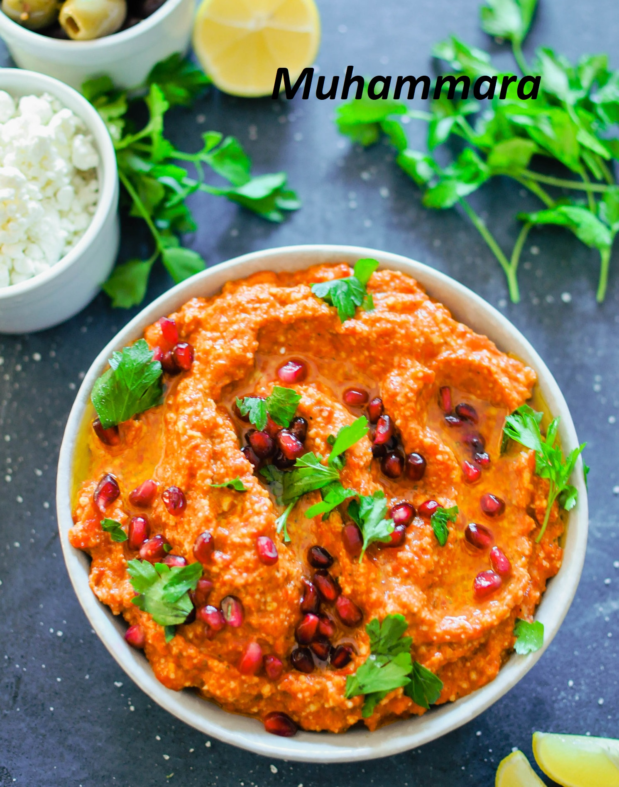
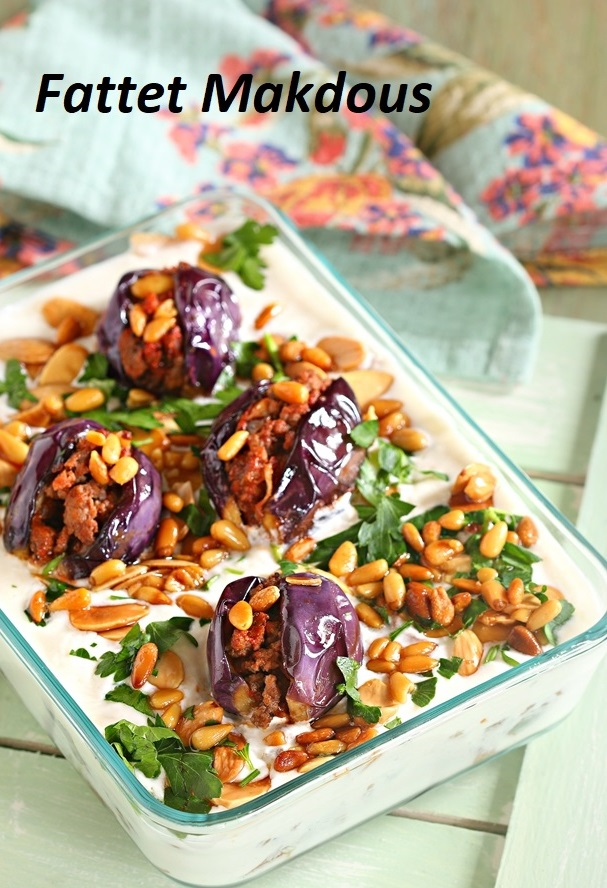
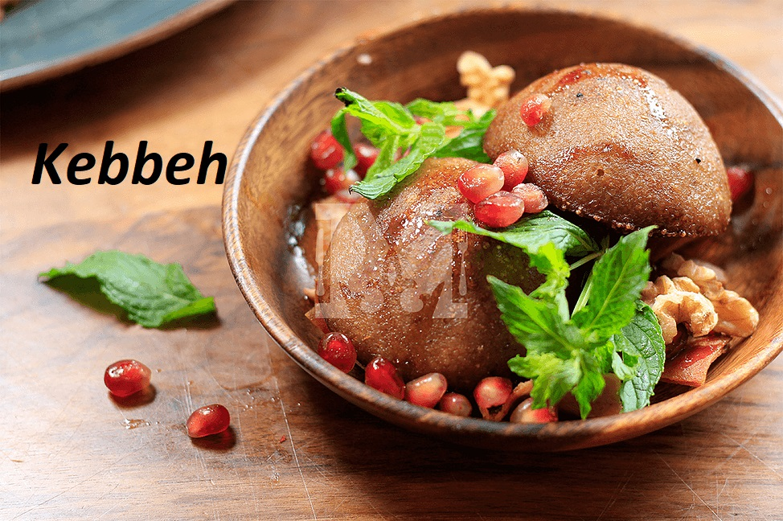
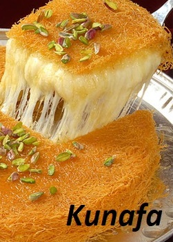

|  |
Love at First Bite...! |
|---|
Syrian cuisine is a diffusion of the cultures of civilizations that settled in Syria, beginning with the Arab Umayyad conquest, then the eventual Persian-influence and ending with the strong impact of Turkish cuisine. It is in many ways similar to other middle-eastern cuisines, mainly Lebanese, Palestinian, Jordanian and Iraqi but also distinctive in its own way.
The Syrian cooking tradition is one of the oldest in the world. Cooking ingredients are varied and dishes
are full of hearty flavors and aromatic spices. Vegetables are mostly the main ingredients of Syrian
everyday cooking. Meat dishes are typically served during feasts and special celebrations. Syrians like
to
decorate their table with different appetizers and salads. Syrian desserts are stuffed with different
nuts,
cream, cheese or dates.
Like many people, I learned authentic Syrian cooking from my mom, and from relatives and friends. I
decided
to create this website to share my joy of cooking with others, especially those who have not tried our
dishes and long to taste new fresh and healthy flavors.
I’m looking forward to reading your reviews, comments and questions.
Alia.
Need some inspiration for your supper tonight? Try one of these mouth-watering dishes!
    